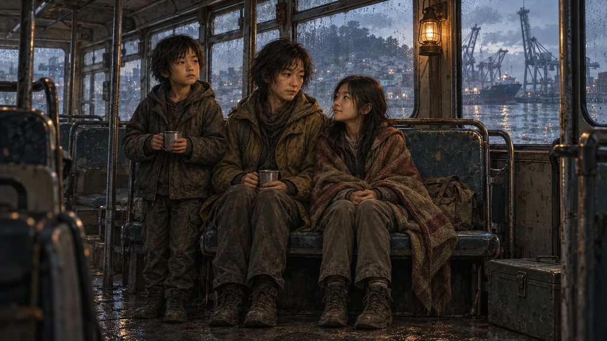
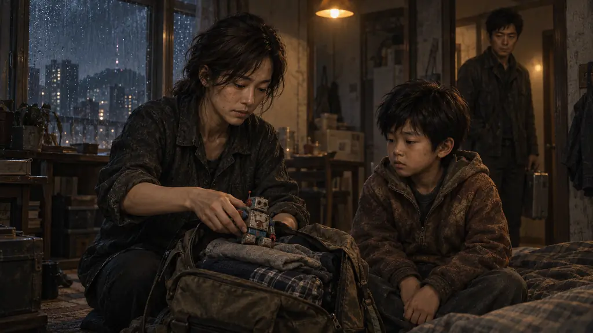
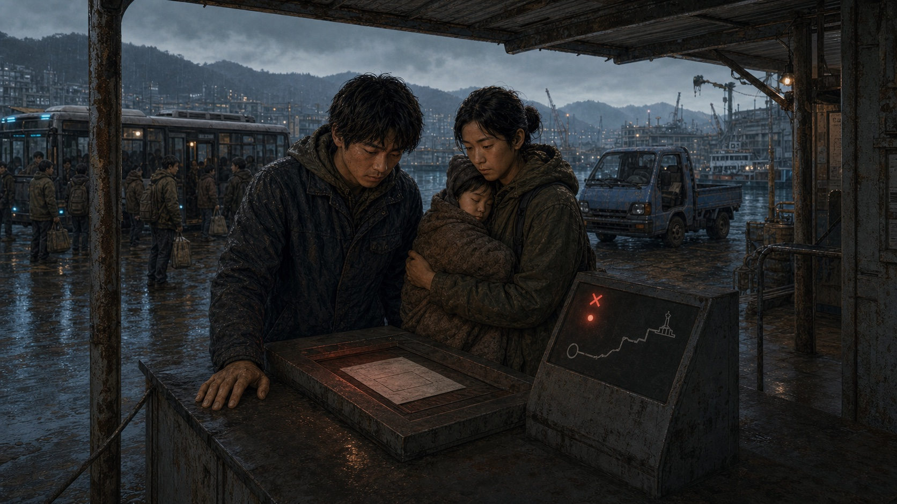
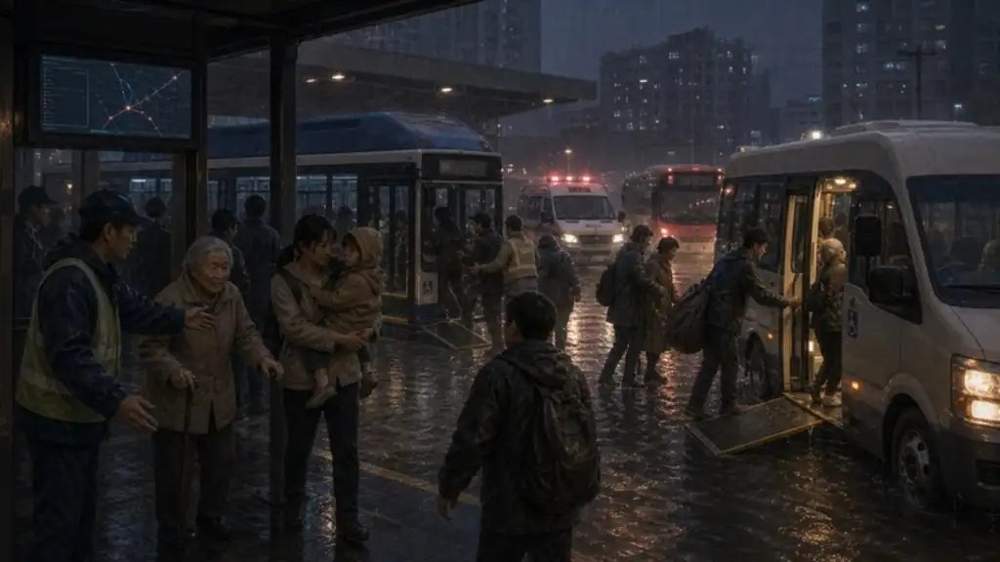
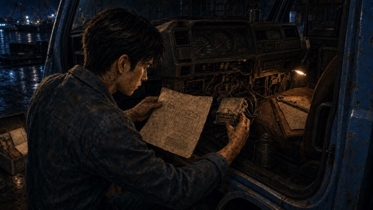
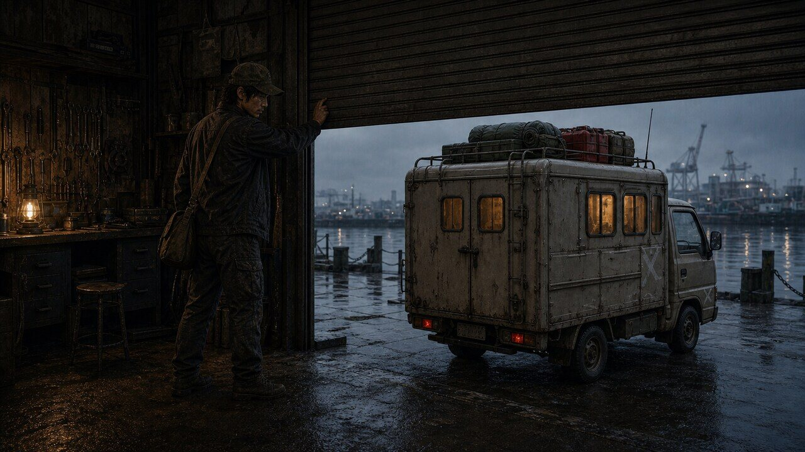
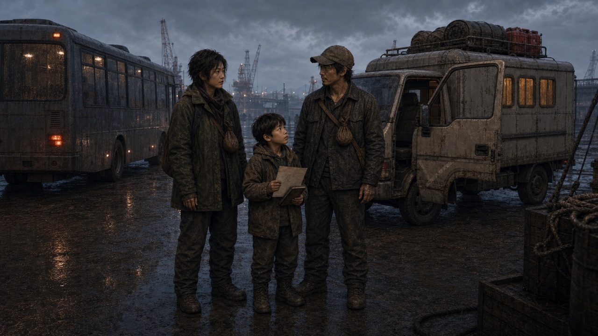
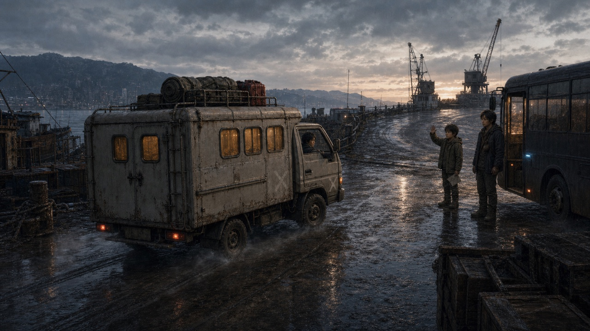

여덟 살의 나
같이 가면 안 돼?
지금
오늘 아침 · 감천 부두

공구를 하나씩 공구함에 넣는 동안, 버스 안 공기가 조금씩 데워졌다.
버스를 떠나기 전, 도윤이 이송표를 내밀었다. 가족 이름과 짐 무게는 적혀 있었다. 사유와 최종 승인자 칸은 부모님의 표처럼 비어 있었다.
내 기억
여덟 살 · 서울을 떠나던 밤

엄마는 가방 안에 내 옷을 눌러 담았다. 나는 꺼내 놓은 로봇을 무릎에 얹고 기다렸다.
같이 가면 안 돼?
다음 차로 꼭 갈게. 네 가방은 할아버지 차에 실어 줄게.
다시 지금
오늘 아침 · 감천 부두

열세 번 넣었어요. 접수됐다고는 해요. 다음 날 보면 신청한 것도 없어져 있고요.
이 단말에서는 이송 명령에 대한 이의 신청을 받을 수 없습니다. 명령을 확인하려면 서울 남산으로 직접 가셔야 합니다.
전해 들은
이야기
출처 · 할아버지의 이야기

내가 본 일이 아니다.
부산에서 할아버지에게 들었던 이야기다.
어느 겨울 전력이 무너지자 딱 72시간만 먼저 실행하게 했어. 그 사흘 동안은 많은 사람을 살렸고.
할아버지
사흘만 한다며. 왜 안 껐어?
그때는 천리안을 끄면 버스도 병원도 멈췄거든. 그러다 첫 이송표가 나왔어. 사람들이 따지러 갔는데, 받아 주는 창구가 없었지.
할아버지
지금
오늘 아침 · 감천 작업장

작업장으로 돌아와 엄마의 철제 상자를 열었다. 수첩 등판에서 회로도가 떨어졌다.
엄마가 설계하고 아빠가 만든 인간 확인 검증키의 배선이었다. 명령을 실행하기 전에 사람의 승인을 받게 하는 장치다.
이송이 다시 시작되면 발신 기록과 당사자 증언을 함께 가져갈 것. 장치만으로는 검증이 끝나지 않는다. 현장 확인은 남산에서.
이후 기존의 분리 절차 두 장·배선 확인과 두 선택을 거칩니다. 이 발췌 초안에서는 실행하지 않습니다.
지금
오늘 아침 · 감천 작업장

내일 손수레 맡기러 올 텐데. …부탁은 해 놓고 가야지.
단골에게 수리가 늦어진다고 알리고 셔터를 절반 내렸다. 공구함 열쇠가 손에 남았다. 맡기고 갈까, 직접 가지고 갈까.
지금
오늘 아침 · 감천 작업장
단골 손에 열쇠를 쥐여 줬다. 돌아올 날짜는 못 적겠다고, 셔터와 공구함만 가끔 봐 달라고 했다. 빈 주머니를 한 번 짚고 달구지에 올랐다.
지금
오늘 아침 · 감천 작업장
돌아올 날짜는 비운 채 쪽지를 붙이고 열쇠를 목에 걸었다.
이 선택 결과의 기존 시동 문장은 마지막 작별 뒤로 옮기는 제안입니다. 시동을 두 번 걸지 않습니다.
지금
오늘 아침 · 부두 입구

남산에 가면 우리도 집에 돌아갈 수 있어요?
그렇게 만들러 가는 거야. 하지만 아직은 몰라. 더 찾아야 할 게 있어.
지금
오늘 아침 · 부두 입구
이미 떠난 사람들도 있어요. 그 사람들은 어떻게 됐는지, 가시면 알아봐 주세요.
네. 먼저 떠난 사람들도 찾아보겠습니다.
도윤은 가족의 이송표 사본을 조수석 수첩 위에 올려놓았다. 하진은 유나가 기다리는 버스로 돌아갔다.
지금
오늘 아침 · 부산에서 북쪽으로

서울까지 400km. 시동 모터가 한 번 헛돌았고, 두 번째에 엔진이 붙었다.
할아버지, 다녀올게.
서장을 마치고
이 지점에서 기존 주행 화면과 목적지 선택으로 이어집니다. 이 초안은 장의 경계만 보여 주며 주행을 재현하지 않습니다.
소리 연출 제안: 회상에서 부두 소리로 복귀 → 작별 뒤 시동 → 주행음.
이 초안은 무음입니다.